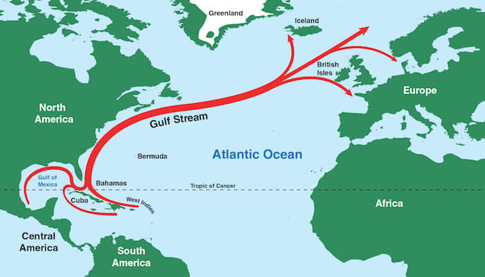
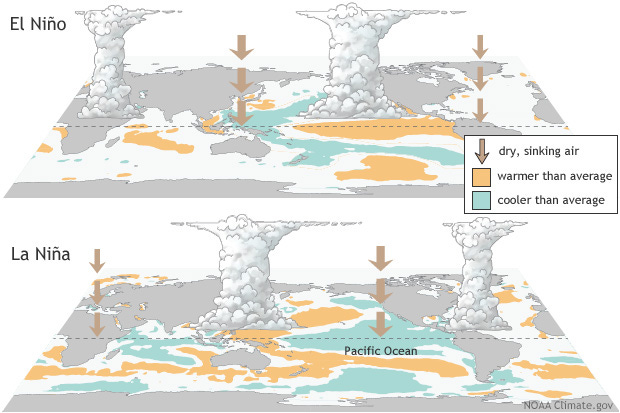
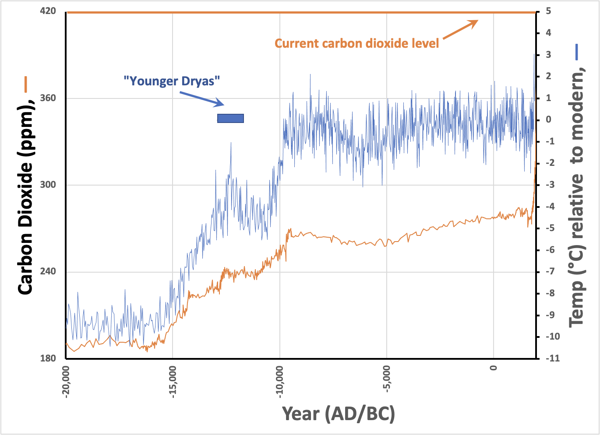

One of my blind spots became apparent early on when I was looking for a way to demonstrate the quality of predictions by climate models to a non-scientific audience. I chose to draw an analogy with the apparent improvements in weather models (notably hurricane predictions) over the past few decades. But, while the analogy demonstrates that global-scale computational models have gotten more predictive over time, it fails to directly address the critical question, “How accurate are the predictions of climate models, really?” Of course, that’s a key question since the relationship between global warming (an observed fact) and climate change (a predicted outcome) is central to our current climate anxiety. But I got it wrong the first time through.
At the core of this blind spot is this: The forces that create weather differ fundamentally from those that create climates. Although I covered this particular error in an earlier installment, it’s worth reiterating:
Climate is defined by long-term weather patterns , while short-term atmospheric phenomena determine the weather.
So, “rain” is the weather, while “rain forest” is the climate.
Readers should try comprehending a few climate modeling-related abbreviations, even though the translated phrases are somewhat nerdy. It reinforces my long-term observation that most barriers to understanding are language-based rather than conceptual. Here are a few:
-
AOGCM: Atmosphere-Ocean General Circulation Model
-
ECS: Equilibrium Climate Sensitivity (predicted rise in global temperature)
-
CMIP6: Coupled (or Climate) Model Intercomparison Project Phase 6
-
AMOC: Atlantic Meridional Overturning Circulation
-
ENSO: El Niño Southern Oscillation
The essential difference is summarized in the AOGCM expansion—How water and air move around the planet is fundamental to climate. AOGCMs are physics-based fluid dynamics (circulation) models that are subject to the “butterfly effect” (see this installment ), meaning that the results are very sensitive to small changes in initial conditions. While computer models of the atmosphere are improving despite having the same sorts of sensitivities (see above), models of ocean currents are not improving much at all. The reasons are apparent: We can observe the entire atmosphere from satellites, but the depths of the oceans can only be sampled point by point. Plus, weather changes regularly, but climates (so far) have been relatively stable. It’s hard to tweak a model when nothing substantial changes!
So, the blind spot is that while weather prediction (based on the atmosphere) is improving quickly, climate models are not. Ocean currents (which ultimately determine weather patterns = climates) are harder to measure from space. As a result, there’s less information about them, and they change more slowly.
This dichotomy highlights the scariest sentence in the scariest section of the entire IPCC report. [To be fair, I haven’t read all 10,000+ pages to support this assertion, so take my hyperbole for what it is.] I covered this earlier in Installment 13 . The sentence opens a section of the Technical Summary entitled “Earth System Feedbacks” in Chapter TS.3, entitled “Understanding the Climate System Response and Implications for Limiting Global Warming” (i.e., “What do the models tell us about how the climate will change?” and “How does this affect our capability to change the outcomes?”):
The combined effect of all climate feedback processes is to amplify the climate response to forcing ( virtually certain ). While major advances in the understanding of cloud processes have increased the level of confidence and decreased the uncertainty range for the cloud feedback by about 50% compared to AR5, clouds remain the largest contribution to overall uncertainty in climate feedbacks ( high confidence ). Uncertainties in the ECS and other climate sensitivity metrics, such as the transient climate response (TCR) and the transient climate response to cumulative CO2 emissions (TCRE), are the dominant source of uncertainty in global temperature projections over the 21st century under moderate to high GHG emissions scenarios. CMIP6 models have higher mean values and wider spreads in ECS and TCR than the assessed best estimates and very likely ranges within this Report, leading the models to project a range of future warming that is wider than the assessed future warming range.
Why am I scared by the opening sentence? Well, let me translate: According to essentially all climate models, small changes in CO2 (such as those we’ve observed) leads to “forcing”, increased retention of heat by the planet. Over time, this generates a larger-than-proportional (i.e., an amplified) response in climates due to “feedback” processes. So, as increased CO2 levels raise the temperature, the models indicate that future climates will become even less predictable. Even climate experts’ combination of the best models (CMIP6) fails to provide clarity. In other words, even professional career climate modelers have only a vague idea, but they agree on one thing: It won’t be good.
The paragraph goes on to describe where models have improved between AR5 (2014) and AR6 (2022) and the answer, “Clouds.” So, after eight years of intense effort, modelers now have more confidence in how global warming affects cloud formation. Woo-hoo.
So, my interpretation: Any specific prediction from climate models is highly uncertain (despite the amount of ink poured on these headline-grabbers), but the general forecast is that when our climates change, it’ll be dramatic, possibly over several decades or even centuries. Earth will never be the same again.
Now, we need to understand the climate effects of ocean currents. The final two abbreviations are worth understanding:
-
AMOC is a broad term for ocean currents in the Atlantic, which includes “The Gulf Stream”, an flow pattern that moderates temperatures in the Eastern US and Europe.

-
ENSO, a phenomenon that has entered widespread awareness as “El Niño” (or its converse “La Niña”), describes two different climate conditions attributed to annual flow patterns in the Pacific Ocean.

The Gulf Stream establishes long-term climates in the North Atlantic, while ENSO creates variable climates in the Pacific, a sort of “either-or” situation. So durably disrupting either flow pattern (turning the Gulf Stream into an oscillation or stabilizing El Niño) would constitute “climate change”, and it’d be pretty obvious.
What about the models’ predictions of “climate change”? They predict “change”, but they aren’t any more specific than that—the models are sensitive to temperature, but the outcomes differ widely. What the popular press currently attributes to climate change is simply the direct response to warming—more intense hurricanes, melting ice sheets, etc. But, when actual climate change happens, we’ll all know it. Rainforests and deserts will move (or not), and Europe will get colder (or warmer, who knows). It’s unpredictable, not due to bad models, but as a rule.
Because the changes in carbon dioxide (alone) may have already begun to change in our climates, what should we expect? This blind spot comes to the fore: Models built from first principles are not very predictive. Can we get insight from history? Sure. The scariest graph from Installment #7:

These two independent data sets derived from fossilized snow (ice cores) correlate. Scientists can (and do) debate the nuances and limitations of these data sets, but the pattern is clear: Since about 10,000 BC, the Earth’s atmosphere and temperatures have been stable, with CO2 levels generally around 280 ppm (the accepted “pre-industrial” level) coupled to constant global temperatures (no substantial warming or cooling). Before 10,000 BC, temperatures increased by 10 C° while CO2 levels increased by about 80 ppm (from 200 to 280). So, without relying on models, that’s 1 C° per 8 ppm increase. Today, we’re at 420 ppm and climbing quickly, with no clear idea of how or how long these historical adjustments might have taken. If the trend is predictive, that means an increase of 10-15C° (15-25F°) before the temperature stabilizes, even if we stop increasing CO2.
If true, such a large change would render significant parts of the world uninhabitable. Of course, this back-of-the-envelope estimate is extrapolating well outside the data set, so it should be taken with a large grain of salt, and it’s no more predictive than all those ‘sophisticated’ models. A rapid increase in CO2 independent of temperature isn’t part of the record, and many factors could make the situation less dire. We may want to put our blind faith in the ability of natural systems to soften the blow.
But that’s not what the modelers tell us. Instead, their models (mostly fit to the past 50 years or so of reliable data) say that effects other than increased CO2 amplify rather than attenuate the climate response.
That’s beyond a Halloween fright. It’s why finding ways to reduce already-emitted CO2 (direct air capture) is the sine qua non of fighting climate change. If we don’t do that, everything else is too little too late, however you look at it.
Thank you for reading Healing the Earth with Technology. This post is public so feel free to share it.